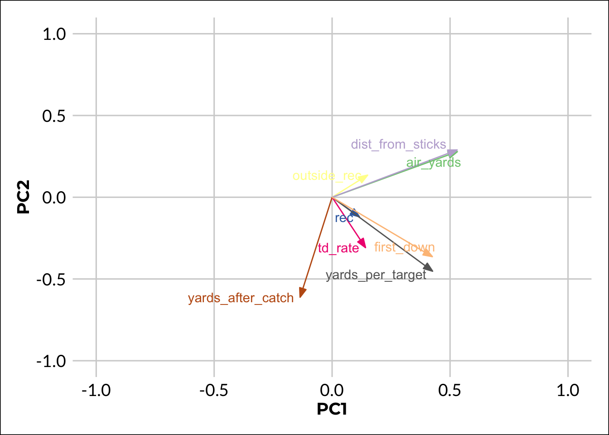
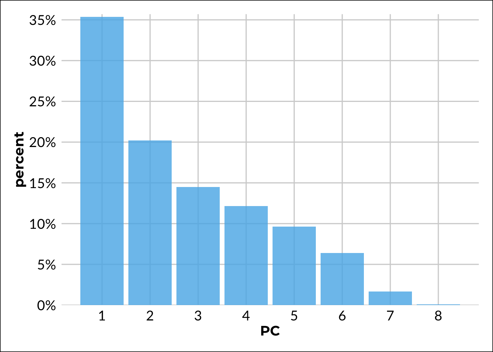

library(tidyverse)
library(broom)
library(gt)
library(ggrepel)NFL PCA w/ R
R
NFL
Comparing the different NFL WR.
Doing a PCA in R is quite easy, but visualising the results can be a challenge. I am going to demonstrate it with NFL data just to add some complexity to it. I wont write much on this post due to time constraints, however, most of the code is commented well enough.
How you load the data depends if you want to use the package nflfastR or not. While it has many useful features, you may not want to use it if you already have the data saved that you want to use.
Show the code for white_theme
white_theme <- function(base_size = 12, font = "Lato") {
### Palette
# http://www.cookbook-r.com/Graphs/Colors_(ggplot2)/#a-colorblind-friendly-palette
cb_palette <- c(
"#000000", "#E69F00", "#56B4E9", "#009E73",
"#F0E442", "#0072B2", "#D55E00", "#CC79A7"
)
# https://www.color-hex.com/color-palette/74767
tom_palette <- c("#003399", "#ff2b4f", "#3686d3", "#FCAB27", "#88398a")
# murdoch theme https://gist.github.com/johnburnmurdoch/bd20db77b2582031604ccd1bdc4be582
ft_palette <- c("#00218D", "#FF2B4F", "#0083EB", "#FCAB27", "#FF49EF")
# colour pieces
scale_fill_cb <- function() {
structure(list(ggplot2::scale_fill_manual(values = cb_palette)))
}
scale_colour_discrete_cb <- function() {
structure(list(ggplot2::scale_colour_manual(values = cb_palette)))
}
scale_color_continuous_cb <- function() {
structure(list(ggplot2::scale_color_gradientn(colours = cb_palette)))
}
# Text Setting
txt <- ggplot2::element_text(
size = base_size + 2, colour = "black",
face = "plain"
)
bold_txt <- ggplot2::element_text(
size = base_size + 2, colour = "black",
family = "Montserrat", face = "bold"
)
large_txt <- ggplot2::element_text(
size = base_size + 4, color = "black",
face = "bold"
)
ggplot2::theme_minimal(base_size = base_size, base_family = font) +
ggplot2::theme(
# Legend Settings
legend.key = element_blank(),
legend.background = element_blank(),
legend.position = "bottom",
legend.direction = "horizontal",
legend.box = "vertical",
# Backgrounds
strip.background = element_rect(),
plot.background = element_rect(),
plot.margin = unit(c(1, 1, 1, 1), "lines"),
# Axis & Titles
text = txt, axis.text = txt,
axis.ticks = element_blank(),
axis.line = element_blank(),
axis.title = bold_txt,
plot.title = large_txt,
# Panel
panel.grid = element_line(colour = NULL),
panel.grid.major = element_line(colour = "#D2D2D2"),
panel.grid.minor = element_blank()
)
}players <- nflfastR::load_player_stats(2021)
rosters <- nflfastR::fast_scraper_roster(2021)
pbp <- nflfastR::load_pbp(2021)It is worth noting that you can get multiple seasons at once using this method. E.g. nflfastR::load_player_stats(2020:2021).
# if you have the data saved locally
df <- purrr::map_df(c(2010:2020), function(x) {
readRDS(
glue::glue("~/Documents/nfl/data/pbp/play_by_play_{x}.rds")
)
})
# if you do not have it saved locally
df <- purrr::map_df(c(2010:2020), function(x) {
readRDS(
glue::glue("https://raw.githubusercontent.com/guga31bb/nflfastR-data/master/data/play_by_play_{x}.rds")
)
})I thought it was worth showing because this was a trick that I found quite useful once I discovered it. I have used it countless times for similar tasks. By using glue(), you can map across the values like an f string in Python.
pbp_wr <- pbp |>
mutate(
# if they caught the ball in the middle of the field,
# assign 0 otherwise, assign 1
outside_pass = ifelse(pass_location != "middle", 1, 0),
pass_air_yards = ifelse(is.na(air_yards), 0, air_yards),
pass_air_yards = ifelse(ydstogo <= 10, pass_air_yards, NA)
) |>
# rec id is a bit of a hack to keep that value
group_by(receiver_id, fantasy_id) |>
summarise(
rec = sum(complete_pass),
air_yards = mean(pass_air_yards, na.rm = TRUE),
yards_per_target = mean(yards_gained, na.rm = TRUE),
yards_after_catch = mean(yards_after_catch, na.rm = TRUE),
td_rate = mean(pass_touchdown),
outside_rec = mean(outside_pass, na.rm = TRUE),
dist_from_sticks = mean(pass_air_yards - ydstogo, na.rm = TRUE),
# first down percentage
first_down = mean(first_down, na.rm = TRUE)
) |>
# so you don't get random players like a QB
filter(rec > 25) |>
left_join(
pbp |>
count(receiver_id, fantasy_id, receiver, posteam) |>
group_by(receiver_id) |>
arrange(-n) |>
# this will keep the first instance of a player
# this is to add players non-numerical values
mutate(rn = row_number()) |>
filter(rn == 1) |>
select(-n, -rn)) |>
relocate(receiver, .before = rec) |>
# this second join is to add the players position
# here we are using the gsid, which is why
# we wanted the fantasy id before
left_join(
select(rosters, position, gsis_id), by = c('fantasy_id' = 'gsis_id')
) |>
filter(position %in% c('WR', 'TE')) |>
# good practice to ungroup at the end
ungroup()If the dataset is large enough, you may get timeout errors, if that is the case, you can seperate the second left_join() into a seperate call, e.g.
Show the code
pbp_wr <- pbp |>
mutate(
outside_pass = ifelse(pass_location != "middle", 1, 0),
pass_air_yards = ifelse(is.na(air_yards), 0, air_yards),
pass_air_yards = ifelse(ydstogo <= 10, pass_air_yards, NA)
) |>
group_by(receiver_id, fantasy_id) |>
summarise(
rec = sum(complete_pass),
air_yards = mean(pass_air_yards, na.rm = TRUE),
yards_per_target = mean(yards_gained, na.rm = TRUE),
yards_after_catch = mean(yards_after_catch, na.rm = TRUE),
td_rate = mean(pass_touchdown),
outside_rec = mean(outside_pass, na.rm = TRUE),
dist_from_sticks = mean(pass_air_yards - ydstogo, na.rm = TRUE),
first_down = mean(first_down, na.rm = TRUE)
) |>
filter(rec > 25) |>
left_join(
pbp |>
count(receiver_id, fantasy_id, receiver, posteam) |>
group_by(receiver_id) |>
arrange(-n) |>
mutate(rn = row_number()) |>
filter(rn == 1) |>
select(-n, -rn)) |>
relocate(receiver, .before = rec)
pbp_wr <- pbp_wr |>
left_join(
select(rosters, position, gsis_id), by = c('fantasy_id' = 'gsis_id')
) |>
filter(position %in% c('WR', 'TE')) |>
ungroup()This is the resulting dataframe. To run a PCA we only want the numeric columns, however, we will be using the character columns for visualising at a later step.
pbp_wr |>
gt() |>
tab_options(container.height = '300px')| receiver_id | fantasy_id | receiver | rec | air_yards | yards_per_target | yards_after_catch | td_rate | outside_rec | dist_from_sticks | first_down | posteam | position |
|---|---|---|---|---|---|---|---|---|---|---|---|---|
| 00-0027944 | 00-0027944 | J.Jones | 31 | 12.08163265 | 6.543860 | 4.548387 | 0.05263158 | 0.8148148 | 4.38775510 | 0.3157895 | TB | WR |
| 00-0028002 | 00-0028002 | R.Cobb | 34 | 9.58695652 | 7.867925 | 5.441176 | 0.01886792 | 0.6600000 | 1.84782609 | 0.4150943 | GB | WR |
| 00-0030035 | 00-0030035 | A.Thielen | 73 | 9.45871560 | 6.400000 | 2.150685 | 0.05000000 | 0.7657658 | 1.66972477 | 0.4750000 | MIN | WR |
| 00-0030061 | 00-0030061 | Z.Ertz | 47 | 7.03225806 | 5.694444 | 2.765957 | 0.05555556 | 0.5942029 | 0.00000000 | 0.3472222 | ARI | TE |
| 00-0030068 | 00-0030068 | M.Goodwin | 27 | 9.80555556 | 8.795455 | 4.222222 | 0.09090909 | 0.7857143 | 2.44444444 | 0.4090909 | SEA | WR |
| 00-0030279 | 00-0030279 | K.Allen | 72 | 7.21111111 | 7.801887 | 4.125000 | 0.03773585 | 0.7843137 | 0.06666667 | 0.4339623 | LAC | WR |
| 00-0030431 | 00-0030431 | R.Woods | 53 | 7.60975610 | 5.666667 | 2.943396 | 0.02150538 | 0.7912088 | 0.14634146 | 0.3440860 | TEN | WR |
| 00-0030564 | 00-0030564 | D.Hopkins | 64 | 9.25581395 | 7.099010 | 2.578125 | 0.02970297 | 0.8750000 | 1.87209302 | 0.3564356 | ARI | WR |
| 00-0031236 | 00-0031236 | B.Cooks | 57 | 9.21978022 | 6.920792 | 3.596491 | 0.02970297 | 0.8924731 | 1.36263736 | 0.3366337 | HOU | WR |
| 00-0031260 | 00-0031260 | L.Thomas | 39 | 7.22222222 | 5.046875 | 3.230769 | 0.01562500 | 0.6721311 | -0.48148148 | 0.2500000 | WAS | TE |
| 00-0031381 | 00-0031381 | D.Adams | 100 | 11.46875000 | 7.937173 | 4.930000 | 0.07329843 | 0.7277778 | 3.76250000 | 0.3769634 | LV | WR |
| 00-0031408 | 00-0031408 | M.Evans | 83 | 11.97826087 | 8.013245 | 2.807229 | 0.03973510 | 0.7971014 | 4.53623188 | 0.4370861 | TB | WR |
| 00-0031428 | 00-0031428 | Al.Robinson | 33 | 9.39583333 | 6.396226 | 2.151515 | 0.05660377 | 0.8076923 | 2.77083333 | 0.4528302 | LA | WR |
| 00-0031544 | 00-0031544 | A.Cooper | 78 | 10.84000000 | 8.169014 | 4.166667 | 0.06338028 | 0.8863636 | 3.51200000 | 0.4718310 | CLE | WR |
| 00-0031547 | 00-0031547 | D.Parker | 31 | 15.64285714 | 10.780000 | 3.387097 | 0.06000000 | 0.8085106 | 7.73809524 | 0.5600000 | NE | WR |
| 00-0031549 | 00-0031549 | N.Agholor | 31 | 12.22727273 | 6.581818 | 4.741935 | 0.03636364 | 0.7547170 | 4.36363636 | 0.2545455 | NE | WR |
| 00-0031588 | 00-0031588 | S.Diggs | 119 | 10.08383234 | 8.438503 | 3.689076 | 0.05882353 | 0.8670520 | 2.26946108 | 0.4652406 | BUF | WR |
| 00-0031610 | 00-0031610 | D.Waller | 28 | 11.45000000 | 8.083333 | 2.857143 | 0.06250000 | 0.6046512 | 3.90000000 | 0.4375000 | LV | TE |
| 00-0031763 | 00-0031763 | D.Carter | 48 | 8.54411765 | 7.928571 | 4.395833 | 0.04285714 | 0.8088235 | 1.19117647 | 0.4571429 | LAC | WR |
| 00-0032211 | 00-0032211 | T.Lockett | 90 | 9.57272727 | 8.060150 | 3.111111 | 0.06766917 | 0.8080000 | 1.80000000 | 0.4436090 | SEA | WR |
| 00-0032392 | 00-0032392 | A.Hooper | 41 | 7.78947368 | 7.047619 | 3.268293 | 0.03174603 | 0.6666667 | 0.26315789 | 0.4603175 | TEN | TE |
| 00-0032398 | 00-0032398 | C.Moore | 48 | 8.73611111 | 7.025641 | 5.479167 | 0.02564103 | 0.8243243 | 0.75000000 | 0.3589744 | HOU | WR |
| 00-0032464 | 00-0032464 | K.Raymond | 47 | 9.68518519 | 9.194030 | 4.638298 | 0.00000000 | 0.7812500 | 1.55555556 | 0.3880597 | DET | WR |
| 00-0032775 | 00-0032775 | D.Robinson | 50 | 9.18571429 | 6.259259 | 3.300000 | 0.03703704 | 0.7948718 | 0.51428571 | 0.3333333 | BAL | WR |
| 00-0033009 | 00-0033009 | T.Boyd | 64 | 8.64367816 | 8.793814 | 4.109375 | 0.05154639 | 0.7640449 | 1.51724138 | 0.5051546 | CIN | WR |
| 00-0033040 | 00-0033040 | T.Hill | 126 | 11.68047337 | 8.905000 | 4.103175 | 0.03500000 | 0.6918919 | 3.92307692 | 0.4500000 | MIA | WR |
| 00-0033090 | 00-0033090 | H.Henry | 41 | 7.49056604 | 8.344262 | 4.951220 | 0.03278689 | 0.8644068 | 0.20754717 | 0.3934426 | NE | TE |
| 00-0033282 | 00-0033282 | C.Samuel | 64 | 6.32954545 | 6.560000 | 4.515625 | 0.04000000 | 0.6739130 | -0.72727273 | 0.3800000 | WAS | WR |
| 00-0033288 | 00-0033288 | G.Kittle | 70 | 6.44318182 | 8.951923 | 6.228571 | 0.10576923 | 0.6494845 | -1.17045455 | 0.4326923 | SF | TE |
| 00-0033307 | 00-0033307 | K.Bourne | 35 | 10.25581395 | 8.509804 | 4.142857 | 0.01960784 | 0.7708333 | 2.13953488 | 0.4313725 | NE | WR |
| 00-0033466 | 00-0033466 | I.McKenzie | 44 | 6.85000000 | 6.275362 | 3.272727 | 0.05797101 | 0.8059701 | -0.38333333 | 0.4202899 | BUF | WR |
| 00-0033536 | 00-0033536 | M.Williams | 63 | 11.31578947 | 9.623656 | 5.063492 | 0.04301075 | 0.8709677 | 4.01315789 | 0.4193548 | LAC | WR |
| 00-0033572 | 00-0033572 | J.Agnew | 26 | 4.41379310 | 5.444444 | 5.076923 | 0.08333333 | 0.8235294 | -3.06896552 | 0.2777778 | JAX | WR |
| 00-0033591 | 00-0033591 | N.Brown | 47 | 9.20253165 | 6.827586 | 3.446809 | 0.03448276 | 0.7564103 | 1.74683544 | 0.3908046 | DAL | WR |
| 00-0033757 | 00-0033757 | R.Tonyan | 53 | 5.06666667 | 6.444444 | 4.339623 | 0.02777778 | 0.5522388 | -2.85000000 | 0.3333333 | GB | TE |
| 00-0033857 | 00-0033857 | J.Smith-Schuster | 88 | 6.54807692 | 8.661017 | 5.511364 | 0.02542373 | 0.7610619 | -1.00000000 | 0.4915254 | KC | WR |
| 00-0033871 | 00-0033871 | C.Davis | 32 | 12.30357143 | 8.246154 | 3.406250 | 0.03076923 | 0.6562500 | 4.87500000 | 0.4307692 | NYJ | WR |
| 00-0033881 | 00-0033881 | E.Engram | 85 | 5.25242718 | 7.193548 | 6.505882 | 0.04032258 | 0.7391304 | -2.07766990 | 0.3709677 | JAX | TE |
| 00-0033885 | 00-0033885 | D.Njoku | 58 | 5.25925926 | 7.218391 | 5.827586 | 0.04597701 | 0.7375000 | -2.40740741 | 0.4252874 | CLE | TE |
| 00-0033891 | 00-0033891 | Z.Jones | 95 | 8.54687500 | 6.848276 | 3.178947 | 0.04137931 | 0.8510638 | 1.16406250 | 0.3517241 | JAX | WR |
| 00-0033895 | 00-0033895 | G.Everett | 64 | 5.19753086 | 6.937500 | 6.265625 | 0.05208333 | 0.8105263 | -2.59259259 | 0.3541667 | LAC | TE |
| 00-0033921 | 00-0033921 | C.Godwin | 114 | 5.07534247 | 6.785276 | 5.087719 | 0.01840491 | 0.6451613 | -2.13698630 | 0.3619632 | TB | WR |
| 00-0033943 | 00-0033943 | J.Reynolds | 38 | 11.45000000 | 7.603175 | 3.026316 | 0.04761905 | 0.7966102 | 4.71666667 | 0.4444444 | DET | WR |
| 00-0034159 | 00-0034159 | W.Dissly | 34 | 4.28571429 | 8.725000 | 5.411765 | 0.07500000 | 0.7368421 | -4.05714286 | 0.5500000 | SEA | TE |
| 00-0034270 | 00-0034270 | T.Conklin | 58 | 7.20547945 | 6.202247 | 5.051724 | 0.03370787 | 0.7471264 | -0.47945205 | 0.2808989 | NYJ | TE |
| 00-0034272 | 00-0034272 | M.Valdes-Scantling | 49 | 12.21052632 | 7.931373 | 3.836735 | 0.03921569 | 0.8043478 | 4.86315789 | 0.4509804 | KC | WR |
| 00-0034286 | 00-0034286 | R.James | 68 | 6.28767123 | 7.233333 | 3.235294 | 0.04444444 | 0.5813953 | -1.38356164 | 0.4111111 | NYG | WR |
| 00-0034348 | 00-0034348 | C.Sutton | 64 | 11.46236559 | 7.025424 | 2.375000 | 0.01694915 | 0.8073394 | 4.01075269 | 0.3728814 | DEN | WR |
| 00-0034351 | 00-0034351 | D.Goedert | 71 | 5.61445783 | 9.163043 | 6.661972 | 0.04347826 | 0.7356322 | -2.77108434 | 0.5434783 | PHI | TE |
| 00-0034364 | 00-0034364 | J.Akins | 37 | 5.64150943 | 8.423729 | 7.297297 | 0.08474576 | 0.7037037 | -1.67924528 | 0.4237288 | HOU | TE |
| 00-0034383 | 00-0034383 | D.Schultz | 69 | 7.16129032 | 6.354545 | 3.217391 | 0.07272727 | 0.6822430 | -1.00000000 | 0.3272727 | DAL | TE |
| 00-0034411 | 00-0034411 | R.Gage | 53 | 4.78082192 | 5.325301 | 3.471698 | 0.06024096 | 0.7435897 | -2.38356164 | 0.3975904 | TB | WR |
| 00-0034487 | 00-0034487 | T.Sherfield | 30 | 9.65853659 | 7.581818 | 4.833333 | 0.03636364 | 0.7735849 | 2.17073171 | 0.3454545 | MIA | WR |
| 00-0034521 | 00-0034521 | A.Lazard | 60 | 11.33333333 | 7.576923 | 4.133333 | 0.05769231 | 0.7400000 | 4.35416667 | 0.4615385 | GB | WR |
| 00-0034753 | 00-0034753 | M.Andrews | 78 | 9.07894737 | 7.092308 | 3.423077 | 0.03846154 | 0.6829268 | 1.28947368 | 0.4307692 | BAL | TE |
| 00-0034764 | 00-0034764 | M.Gallup | 44 | 10.58227848 | 5.402299 | 2.636364 | 0.05747126 | 0.9036145 | 3.74683544 | 0.3793103 | DAL | WR |
| 00-0034775 | 00-0034775 | C.Kirk | 99 | 8.40845070 | 7.412121 | 4.141414 | 0.06060606 | 0.7329193 | 0.66901408 | 0.3818182 | JAX | WR |
| 00-0034777 | 00-0034777 | D.Chark | 30 | 14.70000000 | 9.471698 | 4.466667 | 0.05660377 | 0.8076923 | 7.58000000 | 0.4716981 | DET | WR |
| 00-0034827 | 00-0034827 | D.Moore | 63 | 11.66666667 | 7.023622 | 2.888889 | 0.05511811 | 0.8135593 | 3.79824561 | 0.3779528 | CAR | WR |
| 00-0034829 | 00-0034829 | M.Gesicki | 34 | 8.13461538 | 6.283333 | 2.941176 | 0.10000000 | 0.6896552 | 0.75000000 | 0.3666667 | MIA | TE |
| 00-0034830 | 00-0034830 | H.Hurst | 65 | 5.19480519 | 6.166667 | 3.876923 | 0.03333333 | 0.7882353 | -2.33766234 | 0.4111111 | CIN | TE |
| 00-0034960 | 00-0034960 | J.Meyers | 67 | 9.05434783 | 7.532710 | 3.552239 | 0.05607477 | 0.7395833 | 1.79347826 | 0.4112150 | NE | WR |
| 00-0034970 | 00-0034970 | I.Smith | 26 | 4.64516129 | 4.868421 | 3.500000 | 0.07894737 | 0.8157895 | -2.77419355 | 0.2631579 | MIN | TE |
| 00-0034981 | 00-0034981 | F.Moreau | 33 | 7.86956522 | 7.636364 | 7.181818 | 0.03636364 | 0.6296296 | -0.15217391 | 0.4363636 | LV | TE |
| 00-0034983 | 00-0034983 | H.Renfrow | 36 | 6.75555556 | 6.346154 | 4.138889 | 0.03846154 | 0.6000000 | -0.77777778 | 0.3846154 | LV | WR |
| 00-0035208 | 00-0035208 | O.Zaccheaus | 40 | 10.44642857 | 8.200000 | 4.725000 | 0.04615385 | 0.6721311 | 2.62500000 | 0.4461538 | ATL | WR |
| 00-0035229 | 00-0035229 | T.Hockenson | 96 | 7.11016949 | 7.006757 | 4.875000 | 0.04054054 | 0.7214286 | -0.35593220 | 0.3581081 | MIN | TE |
| 00-0035500 | 00-0035500 | G.Dortch | 52 | 3.77083333 | 7.184615 | 5.634615 | 0.03076923 | 0.8281250 | -4.20833333 | 0.2923077 | ARI | WR |
| 00-0035535 | 00-0035535 | D.Slayton | 51 | 10.96153846 | 8.967033 | 6.019608 | 0.02197802 | 0.8452381 | 2.56410256 | 0.4395604 | NYG | WR |
| 00-0035639 | 00-0035639 | P.Campbell | 63 | 5.67073171 | 6.422680 | 4.380952 | 0.03092784 | 0.7472527 | -1.64634146 | 0.3711340 | IND | WR |
| 00-0035644 | 00-0035644 | N.Fant | 51 | 5.48333333 | 7.100000 | 4.549020 | 0.05714286 | 0.7230769 | -2.25000000 | 0.3857143 | SEA | TE |
| 00-0035659 | 00-0035659 | T.McLaurin | 77 | 11.89090909 | 9.377953 | 5.116883 | 0.03937008 | 0.7500000 | 3.83636364 | 0.4881890 | WAS | WR |
| 00-0035662 | 00-0035662 | M.Brown | 67 | 10.48484848 | 6.059829 | 3.522388 | 0.02564103 | 0.8598131 | 2.94949495 | 0.3333333 | ARI | WR |
| 00-0035676 | 00-0035676 | A.Brown | 101 | 11.85333333 | 9.173184 | 5.930693 | 0.06703911 | 0.8143713 | 4.02666667 | 0.4078212 | PHI | WR |
| 00-0035689 | 00-0035689 | D.Knox | 56 | 7.75675676 | 7.525000 | 3.857143 | 0.08750000 | 0.8441558 | -0.36486486 | 0.4250000 | BUF | TE |
| 00-0035719 | 00-0035719 | D.Samuel | 69 | 4.73267327 | 7.025000 | 9.391304 | 0.02500000 | 0.7304348 | -3.08910891 | 0.2916667 | SF | WR |
| 00-0036040 | 00-0036040 | J.Johnson | 42 | 8.29824561 | 7.582090 | 4.214286 | 0.10447761 | 0.6769231 | 1.05263158 | 0.4179104 | NO | TE |
| 00-0036165 | 00-0036165 | I.Hodgins | 46 | 8.45614035 | 7.843750 | 2.673913 | 0.07812500 | 0.7118644 | 1.07017544 | 0.4531250 | NYG | WR |
| 00-0036232 | 00-0036232 | H.Bryant | 31 | 5.32432432 | 5.431818 | 3.645161 | 0.02272727 | 0.7380952 | -2.18918919 | 0.2727273 | CLE | TE |
| 00-0036233 | 00-0036233 | D.Peoples-Jones | 61 | 11.15555556 | 8.067308 | 3.131148 | 0.02884615 | 0.8333333 | 3.44444444 | 0.3750000 | CLE | WR |
| 00-0036244 | 00-0036244 | C.Parkinson | 28 | 7.34210526 | 8.195122 | 5.535714 | 0.04878049 | 0.8250000 | 0.15789474 | 0.3658537 | SEA | TE |
| 00-0036252 | 00-0036252 | M.Pittman | 99 | 6.62686567 | 6.292517 | 3.606061 | 0.02721088 | 0.6241135 | -0.80597015 | 0.3673469 | IND | WR |
| 00-0036259 | 00-0036259 | J.Jennings | 39 | 8.23636364 | 7.546875 | 4.897436 | 0.01562500 | 0.7301587 | 0.96363636 | 0.4375000 | SF | WR |
| 00-0036261 | 00-0036261 | B.Aiyuk | 84 | 9.79130435 | 8.388060 | 4.904762 | 0.05970149 | 0.7016129 | 1.40000000 | 0.4402985 | SF | WR |
| 00-0036268 | 00-0036268 | L.Shenault | 27 | -0.04166667 | 8.500000 | 12.222222 | 0.03125000 | 0.9062500 | -7.37500000 | 0.3125000 | CAR | WR |
| 00-0036290 | 00-0036290 | C.Kmet | 50 | 6.39393939 | 7.452055 | 5.720000 | 0.09589041 | 0.7826087 | -1.59090909 | 0.3972603 | CHI | TE |
| 00-0036309 | 00-0036309 | D.Mooney | 40 | 12.16071429 | 7.825397 | 4.100000 | 0.03174603 | 0.8688525 | 4.33928571 | 0.3333333 | CHI | WR |
| 00-0036322 | 00-0036322 | J.Jefferson | 135 | 9.49152542 | 9.024155 | 4.626866 | 0.03864734 | 0.8437500 | 2.12429379 | 0.4589372 | MIN | WR |
| 00-0036326 | 00-0036326 | C.Claypool | 46 | 9.44927536 | 5.573171 | 3.239130 | 0.01219512 | 0.8354430 | 1.63768116 | 0.3170732 | PIT | WR |
| 00-0036345 | 00-0036345 | K.Osborn | 62 | 7.44827586 | 6.767677 | 4.903226 | 0.06060606 | 0.7311828 | -0.32183908 | 0.3737374 | MIN | WR |
| 00-0036358 | 00-0036358 | C.Lamb | 121 | 9.54037267 | 8.437158 | 4.495868 | 0.05464481 | 0.7142857 | 1.90062112 | 0.4371585 | DAL | WR |
| 00-0036407 | 00-0036407 | J.Jeudy | 67 | 11.19148936 | 9.169811 | 5.850746 | 0.05660377 | 0.8300000 | 3.28723404 | 0.4245283 | DEN | WR |
| 00-0036410 | 00-0036410 | T.Higgins | 87 | 10.18548387 | 8.435714 | 3.678161 | 0.05714286 | 0.8461538 | 2.65322581 | 0.4214286 | CIN | WR |
| 00-0036613 | 00-0036613 | J.Waddle | 78 | 11.82727273 | 10.687023 | 6.615385 | 0.06106870 | 0.6532258 | 4.10909091 | 0.5038168 | MIA | WR |
| 00-0036637 | 00-0036637 | N.Gray | 31 | 4.97142857 | 8.615385 | 6.516129 | 0.02564103 | 0.7894737 | -3.14285714 | 0.3846154 | KC | TE |
| 00-0036862 | 00-0036862 | B.Skowronek | 39 | 6.44230769 | 6.064516 | 3.512821 | 0.00000000 | 0.7868852 | -1.34615385 | 0.2741935 | LA | WR |
| 00-0036876 | 00-0036876 | K.Granson | 31 | 5.94736842 | 6.863636 | 4.096774 | 0.00000000 | 0.8250000 | -2.26315789 | 0.3863636 | IND | TE |
| 00-0036894 | 00-0036894 | P.Freiermuth | 63 | 7.65555556 | 7.106796 | 4.619048 | 0.01941748 | 0.6530612 | 0.03333333 | 0.3786408 | PIT | TE |
| 00-0036900 | 00-0036900 | J.Chase | 107 | 8.41290323 | 7.447059 | 5.000000 | 0.06470588 | 0.8148148 | 0.90967742 | 0.4352941 | CIN | WR |
| 00-0036936 | 00-0036936 | R.Moore | 41 | 5.66666667 | 6.786885 | 6.853659 | 0.01639344 | 0.8571429 | -2.29411765 | 0.3114754 | ARI | WR |
| 00-0036955 | 00-0036955 | T.Marshall | 28 | 11.16666667 | 10.489796 | 4.714286 | 0.02040816 | 0.9361702 | 3.33333333 | 0.5102041 | CAR | WR |
| 00-0036963 | 00-0036963 | A.St. Brown | 106 | 6.77862595 | 8.047945 | 4.962264 | 0.04109589 | 0.7739726 | -0.84732824 | 0.4657534 | DET | WR |
| 00-0036980 | 00-0036980 | E.Moore | 37 | 11.33928571 | 6.521739 | 2.621622 | 0.01449275 | 0.8461538 | 3.50000000 | 0.3478261 | NYJ | WR |
| 00-0036988 | 00-0036988 | J.Palmer | 74 | 7.60000000 | 6.520325 | 3.567568 | 0.02439024 | 0.8761062 | 0.30476190 | 0.3902439 | LAC | WR |
| 00-0037247 | 00-0037247 | G.Pickens | 52 | 12.63750000 | 8.364583 | 2.000000 | 0.04166667 | 0.8452381 | 5.21250000 | 0.4479167 | PIT | WR |
| 00-0037545 | 00-0037545 | R.Shaheed | 28 | 11.45161290 | 14.352941 | 6.071429 | 0.05882353 | 0.8529412 | 3.70967742 | 0.5294118 | NO | WR |
| 00-0037664 | 00-0037664 | A.Pierce | 41 | 10.34848485 | 7.144578 | 2.756098 | 0.02409639 | 0.8333333 | 2.19696970 | 0.3734940 | IND | WR |
| 00-0037740 | 00-0037740 | G.Wilson | 82 | 9.86923077 | 7.342105 | 4.792683 | 0.02631579 | 0.7808219 | 2.20769231 | 0.3947368 | NYJ | WR |
| 00-0037742 | 00-0037742 | T.Burks | 33 | 10.82352941 | 7.655172 | 4.878788 | 0.01724138 | 0.7222222 | 3.17647059 | 0.3793103 | TEN | WR |
| 00-0037744 | 00-0037744 | T.McBride | 29 | 5.65625000 | 6.309524 | 4.034483 | 0.02380952 | 0.8717949 | -2.15625000 | 0.3095238 | ARI | TE |
| 00-0037809 | 00-0037809 | C.Okonkwo | 32 | 8.71794872 | 9.416667 | 7.937500 | 0.06250000 | 0.8043478 | 0.87179487 | 0.4583333 | TEN | TE |
| 00-0037816 | 00-0037816 | R.Doubs | 42 | 9.51724138 | 6.159420 | 4.666667 | 0.04347826 | 0.7910448 | 1.84482759 | 0.3043478 | GB | WR |
| 00-0037838 | 00-0037838 | I.Likely | 36 | 6.64705882 | 5.828125 | 4.194444 | 0.04687500 | 0.5833333 | -1.29411765 | 0.3281250 | BAL | TE |
| 00-0038090 | 00-0038090 | S.Moore | 27 | 6.67441860 | 6.068182 | 6.259259 | 0.02272727 | 0.6904762 | -1.74418605 | 0.3409091 | KC | WR |
| 00-0038115 | 00-0038115 | D.Bellinger | 33 | 3.97368421 | 6.928571 | 4.818182 | 0.07142857 | 0.7250000 | -3.68421053 | 0.3809524 | NYG | TE |
| 00-0038124 | 00-0038124 | C.Watson | 41 | 13.90625000 | 8.985294 | 6.731707 | 0.10294118 | 0.7272727 | 6.65625000 | 0.4411765 | GB | WR |
| 00-0038129 | 00-0038129 | C.Otton | 46 | 4.50684932 | 5.756410 | 4.695652 | 0.02564103 | 0.6805556 | -2.94520548 | 0.3076923 | TB | TE |
pca_fit <- pbp_wr |>
# only keep numerical columns
select(where(is.numeric)) |>
# scale data
scale() |>
# PCA
prcomp()
pca_fitStandard deviations (1, .., p=8):
[1] 1.68173088 1.27174932 1.07711637 0.98588505 0.87729801 0.71479075 0.36584202
[8] 0.08870096
Rotation (n x k) = (8 x 8):
PC1 PC2 PC3 PC4 PC5
rec 0.1159268 -0.1197363 0.383822308 -0.853131887 0.20655670
air_yards 0.5310677 0.2788281 -0.032409869 0.074971563 -0.12053703
yards_per_target 0.4261138 -0.4524480 -0.229000421 -0.017577601 -0.17037049
yards_after_catch -0.1357212 -0.6116066 -0.379536188 -0.002394961 -0.12774032
td_rate 0.1416324 -0.3082276 0.436150400 0.471041296 0.65943710
outside_rec 0.1507499 0.1354033 -0.665765246 -0.189232967 0.66372069
dist_from_sticks 0.5301450 0.2892646 -0.009558681 0.083941277 -0.09075131
first_down 0.4250833 -0.3635023 0.146898679 -0.038670181 -0.11765724
PC6 PC7 PC8
rec -0.23222341 -0.02181242 0.001206479
air_yards -0.32207027 0.11590137 0.708420325
yards_per_target 0.04860741 -0.72673063 -0.037966166
yards_after_catch -0.52360740 0.41590290 -0.002470946
td_rate -0.18938486 -0.04210135 0.018234833
outside_rec 0.18362831 0.07475244 0.007449410
dist_from_sticks -0.30894140 0.16913733 -0.704163821
first_down 0.63307572 0.49900960 0.021376681Instead of calling scale(), there is an option to have prcomp() scale the data via prcomp(scale = TRUE).
# helper for the axis labels
importance <- pca_fit |>
tidy(matrix = "eigenvalues") |>
filter(PC %in% c(1, 2)) |>
pull(percent) |>
round(3)
pca_fit |>
# add original dataset back in
augment(pbp_wr) |>
ggplot(aes(
.fittedPC1,
.fittedPC2,
colour = position)) +
geom_point(size = 1.5) +
labs(
x = paste0('PC1 (Accounts for ', importance[[1]]*100, '% of Variance)'),
y = paste0('PC2 (Accounts for ', importance[[2]]*100, '% of Variance)')
) +
white_theme()
To look how the different features contribute to each component, we can do:
pca_fit |>
tidy(matrix = "rotation") |>
pivot_wider(
names_from = "PC",
names_prefix = "PC",
values_from = "value") |>
gt() |>
tab_options(container.height = '500px')| column | PC1 | PC2 | PC3 | PC4 | PC5 | PC6 | PC7 | PC8 |
|---|---|---|---|---|---|---|---|---|
| rec | 0.1159268 | -0.1197363 | 0.383822308 | -0.853131887 | 0.20655670 | -0.23222341 | -0.02181242 | 0.001206479 |
| air_yards | 0.5310677 | 0.2788281 | -0.032409869 | 0.074971563 | -0.12053703 | -0.32207027 | 0.11590137 | 0.708420325 |
| yards_per_target | 0.4261138 | -0.4524480 | -0.229000421 | -0.017577601 | -0.17037049 | 0.04860741 | -0.72673063 | -0.037966166 |
| yards_after_catch | -0.1357212 | -0.6116066 | -0.379536188 | -0.002394961 | -0.12774032 | -0.52360740 | 0.41590290 | -0.002470946 |
| td_rate | 0.1416324 | -0.3082276 | 0.436150400 | 0.471041296 | 0.65943710 | -0.18938486 | -0.04210135 | 0.018234833 |
| outside_rec | 0.1507499 | 0.1354033 | -0.665765246 | -0.189232967 | 0.66372069 | 0.18362831 | 0.07475244 | 0.007449410 |
| dist_from_sticks | 0.5301450 | 0.2892646 | -0.009558681 | 0.083941277 | -0.09075131 | -0.30894140 | 0.16913733 | -0.704163821 |
| first_down | 0.4250833 | -0.3635023 | 0.146898679 | -0.038670181 | -0.11765724 | 0.63307572 | 0.49900960 | 0.021376681 |
# define arrow style for plotting
arrow_style <- arrow(
angle = 20,
ends = "first",
type = "closed",
length = grid::unit(8, "pt")
)# plot rotation matrix
pca_fit |>
tidy(matrix = "rotation") |>
pivot_wider(
names_from = "PC",
names_prefix = "PC",
values_from = "value") |>
ggplot(aes(PC1, PC2)) +
scale_color_brewer(palette = "Accent", direction = 1) +
geom_segment(
aes(colour = column),
xend = 0,
yend = 0,
arrow = arrow_style) +
geom_text_repel(
aes(label = column, colour = column),
hjust = 1,
nudge_x = -0.02
) +
scale_x_continuous(limits = c(-1, 1)) +
scale_y_continuous(limits = c(-1, 1)) +
white_theme() +
theme(legend.position = "none")
I used a dark theme for this plot because of the different colours used for the components.
pca_fit |>
tidy(matrix = "eigenvalues") |>
gt() |>
tab_options(container.height = '500px')| PC | std.dev | percent | cumulative |
|---|---|---|---|
| 1 | 1.68173088 | 0.35353 | 0.35353 |
| 2 | 1.27174932 | 0.20217 | 0.55570 |
| 3 | 1.07711637 | 0.14502 | 0.70072 |
| 4 | 0.98588505 | 0.12150 | 0.82221 |
| 5 | 0.87729801 | 0.09621 | 0.91842 |
| 6 | 0.71479075 | 0.06387 | 0.98229 |
| 7 | 0.36584202 | 0.01673 | 0.99902 |
| 8 | 0.08870096 | 0.00098 | 1.00000 |
Likewise, to see how many components to use, we can look at the cumulative explained variance.
pca_fit |>
tidy(matrix = "eigenvalues") |>
ggplot(aes(PC, percent)) +
geom_col(fill = "#56B4E9", alpha = 0.8) +
scale_x_continuous(breaks = 1:8) +
scale_y_continuous(
breaks = seq(0, 0.40, 0.05),
labels = scales::percent_format(),
expand = expansion(mult = c(0, 0.01))
) +
white_theme()
Update
I thought it might be fun to add an example of a 3D plot of the components. For this I will use plotly. It is one of the more interactive friendly visualisation tools, and from my experience the code is very similar from Python to R. If you are not too familiar with Python, writing this code may feel awkward. However, I think it is quite useful to get familiar with it because I can easily use plotly in Python without having to change much at all.
library(plotly)
# making a seperate df will simplify plotly creation
pca_df <- pca_fit |>
augment(pbp_wr)
fig <- plot_ly(
pca_df,
x = ~.fittedPC1,
y = ~.fittedPC2,
z = ~.fittedPC3,
color = ~position,
colors = c('#386cb0', '#beaed4'),
text = ~receiver)
fig <- fig |>
add_markers()
fig <- fig |>
layout(scene = list(
xaxis = list(title = 'PC1'),
yaxis = list(title = 'PC2'),
zaxis = list(title = 'PC3')
))figThat is all for now. I have a few more similar posts saved in my draft, so they should be on here soon (within the next six months).
Session Info
sessionInfo()R version 4.1.2 (2021-11-01)
Platform: x86_64-apple-darwin17.0 (64-bit)
Running under: macOS Big Sur 10.16
Matrix products: default
BLAS: /Library/Frameworks/R.framework/Versions/4.1/Resources/lib/libRblas.0.dylib
LAPACK: /Library/Frameworks/R.framework/Versions/4.1/Resources/lib/libRlapack.dylib
locale:
[1] en_US.UTF-8/en_US.UTF-8/en_US.UTF-8/C/en_US.UTF-8/en_US.UTF-8
attached base packages:
[1] stats graphics grDevices utils datasets methods base
other attached packages:
[1] plotly_4.10.1 ggrepel_0.9.3 gt_0.8.0 broom_1.0.4
[5] lubridate_1.9.2 forcats_0.5.1 stringr_1.5.0 dplyr_1.1.1
[9] purrr_1.0.1 readr_2.1.4 tidyr_1.3.0 tibble_3.2.1
[13] ggplot2_3.4.1 tidyverse_2.0.0
loaded via a namespace (and not attached):
[1] tidyselect_1.2.0 xfun_0.37 colorspace_2.1-0 vctrs_0.6.1
[5] generics_0.1.3 viridisLite_0.4.1 htmltools_0.5.5 yaml_2.3.7
[9] utf8_1.2.3 rlang_1.1.0 pillar_1.9.0 glue_1.6.2
[13] withr_2.5.0 bit64_4.0.5 RColorBrewer_1.1-3 lifecycle_1.0.3
[17] munsell_0.5.0 gtable_0.3.3 htmlwidgets_1.6.2 evaluate_0.20
[21] labeling_0.4.2 knitr_1.42 tzdb_0.3.0 fastmap_1.1.1
[25] crosstalk_1.2.0 parallel_4.1.2 fansi_1.0.4 Rcpp_1.0.10
[29] scales_1.2.1 backports_1.4.1 vroom_1.6.1 jsonlite_1.8.4
[33] farver_2.1.1 bit_4.0.5 hms_1.1.3 digest_0.6.31
[37] stringi_1.7.12 grid_4.1.2 cli_3.6.1 tools_4.1.2
[41] magrittr_2.0.3 sass_0.4.5 lazyeval_0.2.2 crayon_1.5.2
[45] pkgconfig_2.0.3 ellipsis_0.3.2 data.table_1.14.8 timechange_0.2.0
[49] httr_1.4.5 rmarkdown_2.20 rstudioapi_0.14 R6_2.5.1
[53] compiler_4.1.2